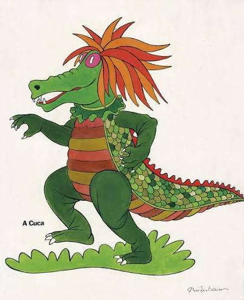

Cuca é um dos principais seres mitológicos do folclore brasileiro. Outras versões, a cuca é uma entidade do mal que assume a forma de bruxa velha com aspecto de jacaré, que não se sabe ao certo sua idade mas que pode ter mais de 3 mil anos, como também existem versões em que pode se existir mais de uma cuca, como se fosse uma subclasse de bicho-papão, como é descrito no livro “O Saci” (1921), de Monteiro Lobato.
m seu livro "Geografia dos Mitos Brasileiros", Luís da Câmara Cascudo (1898-1986) diz que a Cuca é um mito de origem portuguesa relacionado à Coca, figura que aparecia nas procissões da província do Minho, em Portugal. Também no Minho, "cuca" é o nome popular de uma espécie de abóbora que costumava-se perfurar com contornos de olhos e boca, e dentro da qual era colocada uma vela acesa (de forma semelhante ao que se faz no Halloween americano). Outra origem possível seria o “Farricoco”, personagem que acompanhava a procissão de Passos, no Algarve, também em Portugal.
voltar para início